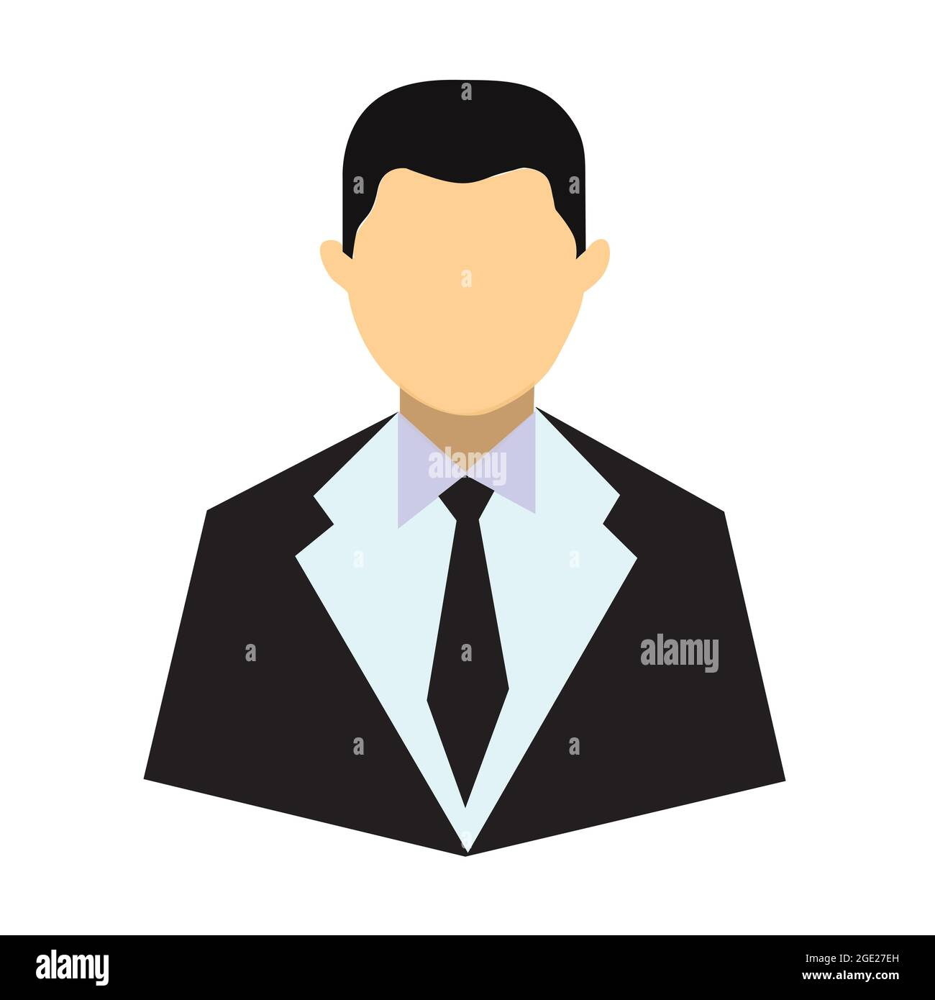

Dinamicas para Preescolar
Dinamicas para Primaria
Nosotros
Ana Isabel Jasso Velázquez
No. Control: 1220100074
Estudiante de Ingeniería en Desarrollo y Gestión de Software

Carlos Eduardo Rangel Lozano
No. Control: 1219100777
Estudiante de Ingeniería en Desarrollo y Gestión de Software